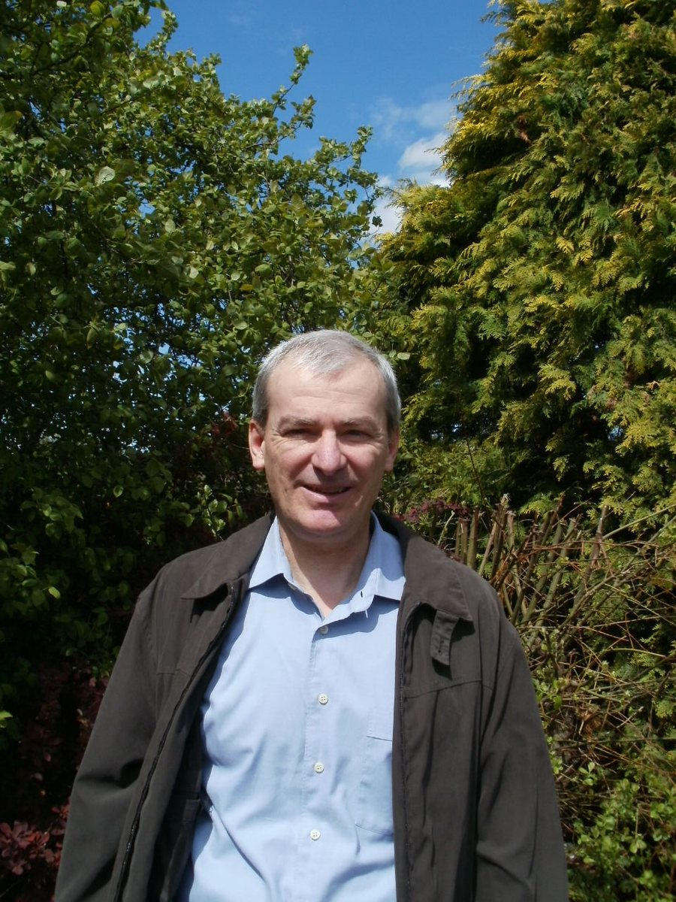
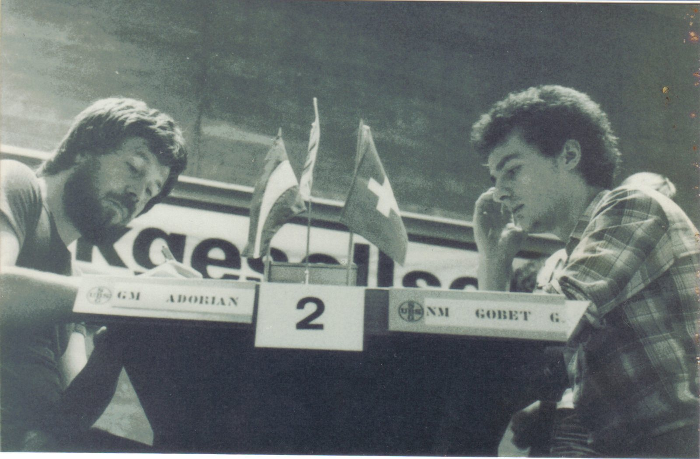
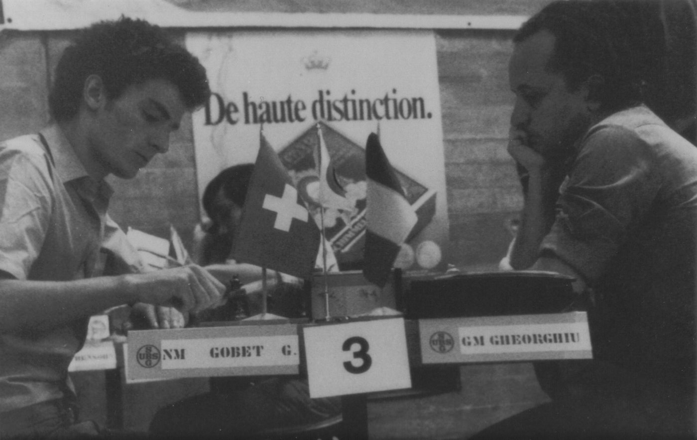
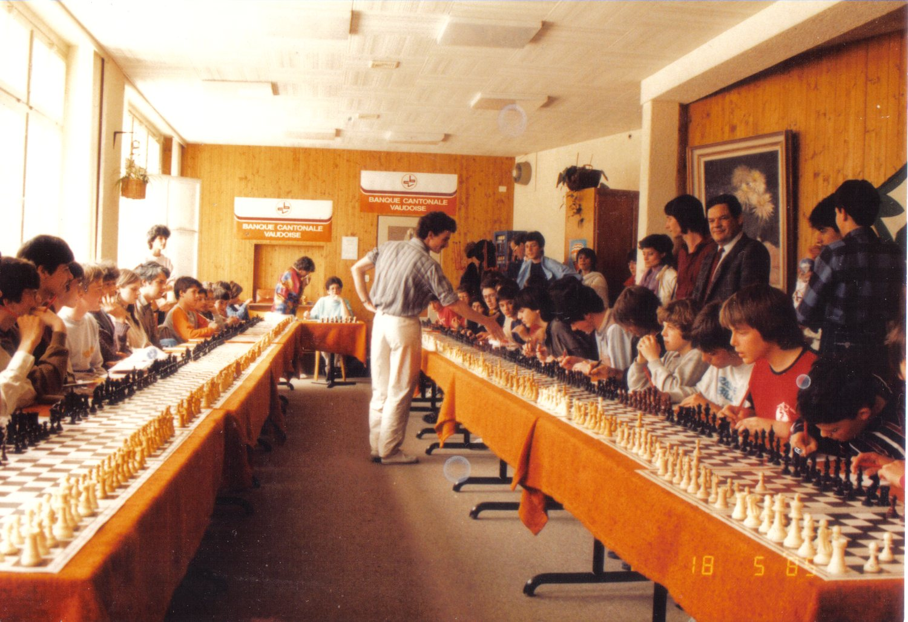
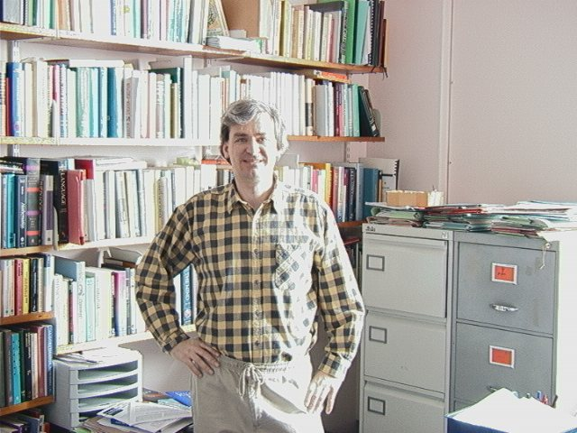
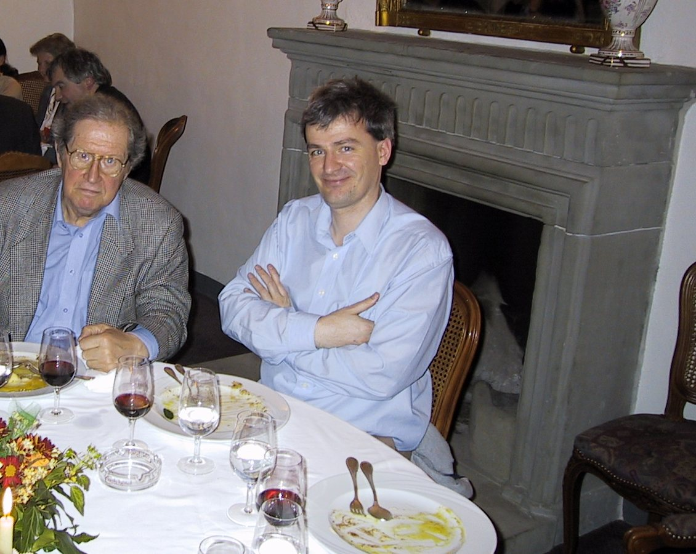

Fernand Gobet is a cognitive scientist who uses computational modelling to study how people learn, from the acquisition of language and expertise to the limits of cognitive training, and how the process of scientific discovery itself can be automated.
With Herbert A. Simon, he revisited chunking theory[1] and collected new data on memory[2][3][4][5] and decision making[6][7] in chess, work that led to the template theory[8] of expert memory.
He is Professorial Research Associate at the Centre for Philosophy of Natural and Social Science, London School of Economics and Political Science. His research ranges across expertise, memory, intuition, decision making and learning. He is also a chess International Master, and the author or co-author of ten books.
The Chessboard
Born in Switzerland in 1962, Gobet came to psychology by way of chess. He became an International Master, played many times for the Swiss national team, and reached a peak Elo rating of 2401. From 1981 to 1989 he was co-editor of the Swiss Chess Review. At the Biel International Chess Festival in 1983 he met, among others, the grandmasters András Adorján and Florin Gheorghiu.



He studied psychology at the University of Fribourg, where he received his PhD in 1992 with a thesis on the memory of chess players.
Carnegie Mellon
At Carnegie Mellon University in Pittsburgh he worked with Herbert A. Simon, who with William Chase had proposed the chunking theory of expertise in 1973. Together they put the theory to new tests, collecting data on how chess players of different strengths remember positions, how much presentation time matters, and how masters choose moves under time pressure.
The result was the template theory (1996), which explains how experts encode new information so quickly: frequently encountered patterns grow into templates, large chunks with slots that can be filled rapidly. In the same years, with Peter Jansen, he wrote a chess program built on a model of human memory.
United Kingdom
As a lecturer at the University of Nottingham he developed CHREST (Chunk Hierarchy and REtrieval STructures), a cognitive architecture that models human learning and perception. Its mechanisms were applied well beyond chess, to expertise in other domains and to children's acquisition of language. In 2001 he returned to Fribourg for the colloquium Board Games in Academia IV; the psychology of board games became the subject of Moves in Mind (2004).


In 2003 he took up a chair at Brunel University London, and in 2013 became Professor of Cognitive Psychology at the University of Liverpool. His work in these years widened to intuition, talent and deliberate practice, the limits of cognitive training, and the use of computational methods for scientific discovery in the social sciences. His books include Foundations of Cognitive Psychology (2011), Understanding Expertise (2015), The Psychology of Chess (2018) and Transition Expertise and Identity (2024).
He is now at the London School of Economics. A fuller record of his writing is on the publications page.